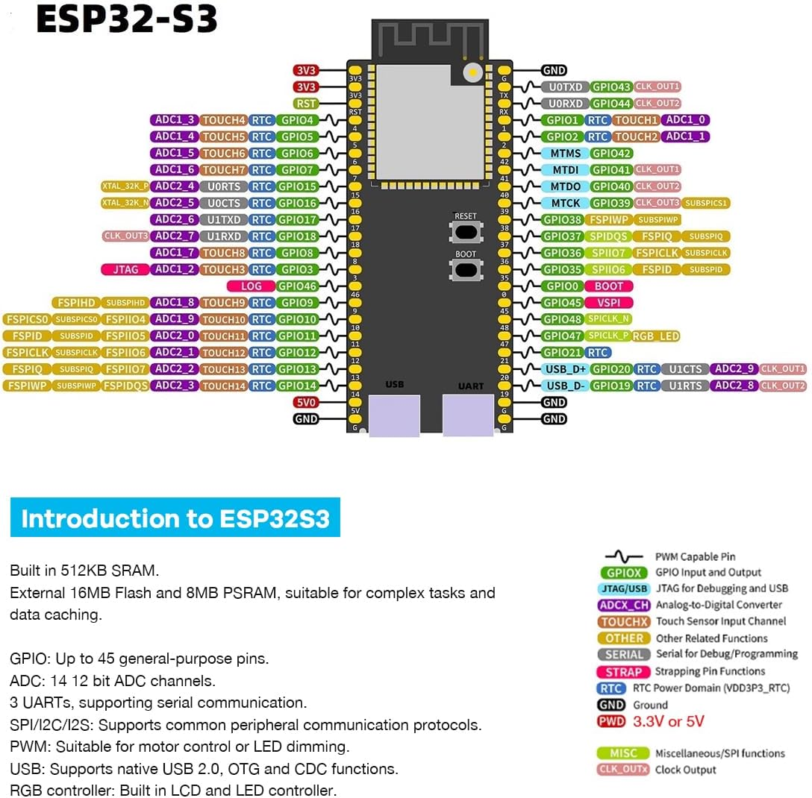

ESP-Nix · ESP Computer
Bus-level connections for the three ESP32-S3 boards (MAIN, CPU, GPU) and the ESP32 WROOM-32E, as resolved in goals.md. This is the wiring plan, not a pinout — see the note at the bottom before touching a breadboard.
| Link | Type | Wires (nominal) | Carries |
|---|---|---|---|
| MAIN ↔ CPU | SPI dedicated bus | 4 | USB input relay, sync signals, SD data relay, WiFi relay, offloaded compute. One of the two is the fixed bus master (independent of run set). |
| MAIN → GPU | SPI shared bus, own CS | 4 + 1 CS | Render/draw commands, when MAIN is the active -g source. |
| CPU → GPU | SPI shared bus, own CS | (shares above) + 1 CS | Render/draw commands, when CPU is the active -g source. Shares the physical bus with MAIN→GPU since only one is ever active at a time. |
| GPU → WROOM-32E | SPI dedicated | ~4 | Fully-rendered frame, video-out. Highest bandwidth/most timing-critical link in the system - ~9.2Mbit/s sustained (320×240 @ 4bpp, 30fps unique frames held across 60Hz output), well within a single SPI bus's ~80Mbit/s theoretical (~8x headroom). QSPI (4 data lines on the same peripheral) is the fallback if more headroom is ever needed, not a second bus. |
| MAIN → WROOM-32E | I2C or UART | 2 | SD file-read relay. At most ~1Mbit/s needed - doesn't warrant SPI's extra wires. |
| Keyboard → MAIN | USB OTG (host) | USB-1 | Raw keystrokes, forwarded on to CPU's terminal over the MAIN↔CPU bus - no local handling on MAIN. |
| Mouse → CPU | USB OTG (host) | USB-2 | Pointer input for CPU. |
| SD card → WROOM-32E | Physical slot | — | Single SD card in the whole system - MAIN and CPU have no SD of their own. |
| WROOM-32E → CRT | RCA composite | 1 (+ shield/GND) | Analog video signal only. CRT has its own AC mains supply - no power relationship with the rest of the system. |
| PD brick → MAIN/CPU/GPU | 5V USB-PD, 3 ports | 1 per board | MAIN and CPU get the PD brick's ports (need headroom for their OTG peripheral's power draw); GPU gets the third. |
| Separate supply → WROOM-32E | 5V simple | 1 | Least power-demanding chip - no OTG host duty, no rendering. A phone charger or spare USB port is enough. |
| Common ground | GND shared reference | 1 (bussed) | Ties MAIN, CPU, GPU, and WROOM-32E together regardless of each having independent power - required for the SPI/I2C/UART signaling above to be reliable. |

Two distinct memory pools, not one - the "8MB RAM" shorthand used earlier meant the external PSRAM specifically. Both figures below are correct at once: 512KB internal SRAM (fast, on-die) plus 8MB external PSRAM (larger, cache/paged). 34 usable GPIOs, 2 general-purpose SPI, 2 I2C, 3 UART.
Pins already spoken for on this module, before any wiring above touches a GPIO:
USB OTG host mode - confirmed, not speculative: the board's pinout diagram lists native USB 2.0/OTG/CDC support with dedicated USB_D+ (GPIO20) / USB_D- (GPIO19) pins, a second USB port separate from the UART programming port above. Keyboard→MAIN and mouse→CPU can plug directly into each board's own native USB port with no extra wiring, so long as that port is actually broken out to a connector on this board (worth a quick continuity check once hardware is in hand).
SPI peripheral count: only 2 general-purpose SPI controllers per S3. MAIN and CPU each use both of theirs (one dedicated bus to each other, one shared bus to GPU) - no room to spare. GPU uses one for the shared render-command bus in from MAIN/CPU and one for video-out to WROOM-32E - a single SPI bus per leg fits cleanly within the 2-peripheral budget, and that video-out bus already has ~8x bandwidth headroom over the ~9.2Mbit/s target. If more headroom is ever needed, Quad SPI (QSPI) - 4 data lines on that same single peripheral - is the lever, not a second bus instance.
Everything else still applies: both the S3s and the WROOM-32E route SPI/I2C/UART to nearly any remaining pin via their GPIO matrix - the assignment beyond the exclusions above is a wiring choice, not a hardware constraint. The breadboard is the right place to try the GPU↔WROOM-32E escalation ladder and confirm real throughput before committing to a permanent build.